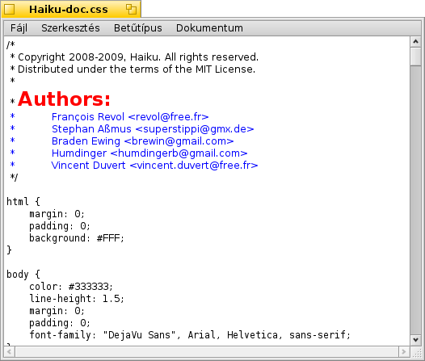

StyledEdit
StyledEdit
| Asztalsáv: | ||
| Útvonal: | /boot/system/apps/StyledEdit | |
| Beállítások: | Nincs |
A StyledEdit a Haiku saját (egyszerű) szövegszerkesztője. Bár a fájlokat egyszerű szövegként menti el, a jellemzőknek köszönhetően (korlátozottan) formázási lehetőségünk is van, azonban ezek csak a StyledEdit-ben használhatóak.
A jellemzőket megkapjuk, ha a Terminál-ban a listattr parancsot használjuk:
~> listattr Haiku-doc.css
File: Haiku-doc.css
Type Size Name
----------- --------- -------------------------------
Int-32 4 "be:encoding"
MIME String 11 "BEOS:TYPE"
Int-32 4 "wrap"
Int-32 4 "alignment"
Raw Data 1048 "styles"
1071 bytes total in attributes.
Mint látható, a StyledEdit összes formázási lehetősége megjelenik, mint jellemző: sortörés (be/ki) és igazítás (balra/középre/jobbra). A stílusok (betűtípus, méret, szín) az összes karakterhez pedig egy külön jellemzőként jelenik meg.
Bármikor jól jöhet az, ha ki tudjuk emelni a bizonyos szövegrészeket, miközben a fájl tartalma megmarad egyszerű szövegnek. Például egy ReadMe.txt bármilyen rendszeren olvasható, akár parancssorból is, mint szöveg, ugyanakkor ha Haiku alatt megnyitjuk, ha tartalmaz stílusokat, akkor az annak megfelelően fog megjelenni.
A StyledEdit használata igen egyszerű. Csak írjuk meg a szöveget, jelöljük ki a kívánt szövegrészt, majd adjuk meg a méretet és a színt a menüből. A sortörést és az igazítást pedig a menüből tudjuk megadni. Ez azonban csak az egész fájlra alkalmazható.